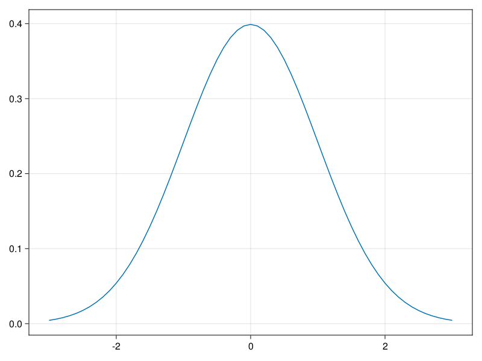
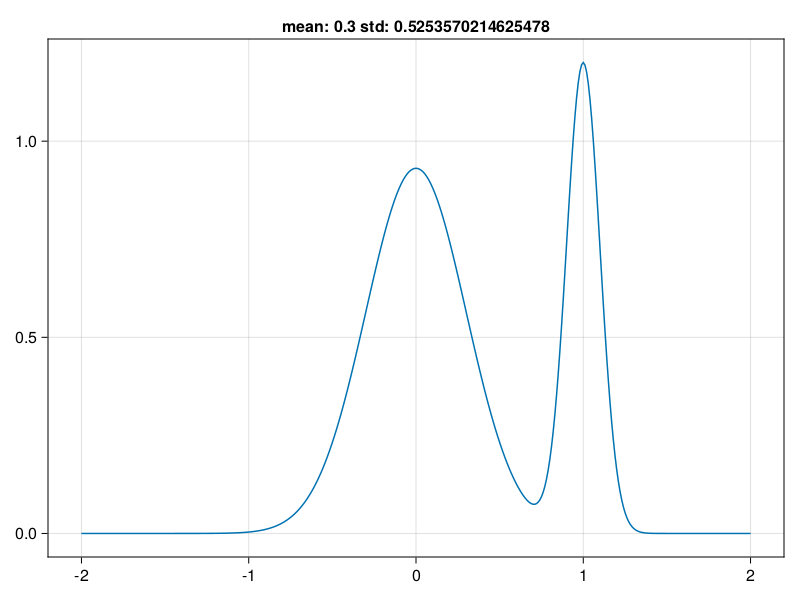

function freq(x)
y = Dict()
for xi in x
y[xi] = get(y, xi, 0) + 1
end
return y
endfreq (generic function with 1 method)Julia的函数能够针对不同的自变量类型通过即时编译产生高效代码， 不需要声明自变量类型。
函数可以声明自变量类型和返回值类型， 这可以限定能使用的自变量类型， 避免错误的输入， 使得程序意图更明显； 同一个函数可以有不同类型的自变量， 这其实是多个函数共用同一个函数名， 称这些函数为该函数名的“方法”（methods)。 这种做法称为“多重派发”（multiple dispatch）， 还可以类似于C++模板， 将函数自变量类型参数化， 这样同一代码可以适用于多个自变量类型。
freq (generic function with 1 method)1×1=1
1×2=2 2×2=4
1×3=3 2×3=6 3×3=9
1×4=4 2×4=8 3×4=12 4×4=16
1×5=5 2×5=10 3×5=15 4×5=20 5×5=25
1×6=6 2×6=12 3×6=18 4×6=24 5×6=30 6×6=36
1×7=7 2×7=14 3×7=21 4×7=28 5×7=35 6×7=42 7×7=49
1×8=8 2×8=16 3×8=24 4×8=32 5×8=40 6×8=48 7×8=56 8×8=64
1×9=9 2×9=18 3×9=27 4×9=36 5×9=45 6×9=54 7×9=63 8×9=72 9×9=81 求解平方根公式，相当于求根 \(f(x)=u^2-x=0\)
function mysqrt(x,eps=1E-6)
u2 = 1.0
u1 = 0.0
while abs(u2-u1)>=eps
u1 = u2
u2 = 0.5*(u2+x/u2)
end
return u2
end
mysqrt(2)1.414213562373095function summ(x)
xm = sum(x) / length(x)
xs = sum(x .^ 2) / length(x)
return xm, xs
end
res1, res2 = summ([1, 2, 3, 4, 5])
## (3.0, 11.0)
println(res1, ", ", res2)3.0, 11.0可以看到在输入有小数数据时候，数组类型已经转变为Float格式
同样，若输入带有引号的数据，也即是字符串，也会自动识别出字符串类型
使用 end 来表示最后一个字符
这说明数组是“可变类型”(mutable)， 即其中的成分可以原地修改。 字符串和元组则属于不可变类型(immutable)。
使用length(vector) 的效果和 vector[end] 相同。
Dict{String, Any} with 2 entries:
"name" => "Li Ming"
"age" => 18Dict{Char, Int64} with 4 entries:
'a' => 1
'c' => 3
'd' => 4
'b' => 2Dict{Char, Int64} with 4 entries:
'a' => 1
'c' => 3
'd' => 4
'b' => 2map(f,c) 可以对迭代器 c 的每个元素 f 变换并返回结果。或对多个迭代器的多个元素用 f 变换并返回结果，当其中某一个迭代器元素用完时遍历结束。
单个迭代器的map往往可以用生成器或者广播函数代替。 例
并不要求长度相同，这一点与广播不同。如：
3-element Vector{Vector{Int64}}:
[2, 11]
[2, 11, 3, 5]
[2, 11, 3, 5, 7]mapreduce(f, op, itrs...; [init])等价于 reduce(op, map(f, itrs...); [init])， 但不需要保存中间结果， 效率会略高一些。 如：
replace(A, old_new::Pair...)可以从迭代器A中用给出的一个或多个替换规则进行替换。 如：
Julia的参数传递是“共享传递”(pass by sharing)， 这样可以省去复制的开销。 如果参数是标量的数值、字符串、元组(tuple)这样的非可变类型， 参数原来的值不会被修改； 如果参数是数组这样的可变(mutable)数据类型， 则函数内修改了这些参数保存的值，传入的参数也会被修改。
function f(n)
println("Inside f() before changing, n=", n)
n = -1
println("Inside f() after changing, n=", n)
return
end
function test()
n = 1
f(n)
println("Out of f(), n=", n)
end
test()Inside f() before changing, n=1
Inside f() after changing, n=-1
Out of f(), n=1xx = [2, 4, 6]Julia函数的命名习惯是， 如果函数会修改自变量的值， 将函数名末尾加上一个叹号后缀。（不加也能运行）
[1.5, 3.0, 4.0, 9.12]v2 = [1.5, 3.0, 4.0, 9.12]module MyStat
export mean, rmse
function mean(x)
sum(x) / length(x)
end
function rmse(x)
sqrt(sum(x .^ 2) / length(x))
end
end
## Main.MyStatMain.MyStatWARNING: ignoring conflicting import of MyStat.mean into Main2.7386127875258306
let
d = MixtureModel(Normal[
Normal(0, 0.3), Normal(1, 0.1)],
[0.7, 0.3])
x = -2:0.01:2
y = pdf.(d, x)
m = mean(d)
s = std(d)
lines(x, y, axis=(; title="mean: $(m) std: $(s)"))
end
x = [1, 3, 4, 1, 3, 1]
g = unique(x);
show(g);
## [1, 3, 4]
[count(xi -> xi == gk, x) for gk in g] |> show[1, 3, 4][3, 2, 1]在包和函数之间使用. 连接
Histogram{Int64, 1, Tuple{Vector{Float64}}}
edges:
[0.5, 1.5, 2.5, 3.5]
weights: [1, 3, 2]
closed: left
isdensity: false5-element Vector{Float64}:
0.00061208621838027
0.26729657248814825
0.5100464772980691
0.7506837397538798
0.99758500119187442-element Vector{Float64}:
0.011542435681003603
0.9893833678493836其中的 rand() 是用于生成标准均匀分布的随机数向量。
[0.5262348115842176, -1.2278812270298407, -0.3508232077228116, 1.403292830891247, -0.3508232077228116]function cvind(N, k)
## 每组的大致点数
gs = N ÷ k
## 将1到N下标随机乱序
index = shuffle(collect(1:N))
## 指定组规模分组，这可能会使得最后一个组仅有几个点
folds = collect(Iterators.partition(index, gs))
## 如果gs*k不等于N，将最后一个点很少的组与倒数第二个组合并
if length(folds) > k
folds[k] = vcat(folds[k], folds[k+1])
deleteat!(folds, k+1)
end
return folds
end # function cvindcvind (generic function with 1 method)function kfolds(dat, ind)
## 折数
k = length(ind)
## 所有数据的下标
ind1 = collect(1:size(dat, 1))
## 用字典形式返回结果，每一项是编号到字典的映射，
## 每一折有留出的用来评估的折以及其余折合并的数据集
res = Dict{Int, Dict}()
for i = 1:k
## 对第i折的产生训练集和测试集
res2 = Dict{String, DataFrame}()
## 去掉第i折作为测试集，其余k-1折皆为训练集
tr = setdiff(ind1, ind[i])
res2["training"] = dat[tr, :]
res2["testing"] = dat[ind[i], :]
res[i] = res2
end
return res
endkfolds (generic function with 1 method)function maj_vote(yn)
# StatsBase.countmap是输入整数值，返回频数表的函数
cm = countmap(yn)
mv = -999
lab = nothing
tot = 1e-8
for (k, v) in cm
tot += v
if v > mv
mv = v
lab = k
end
end
prop = mv / tot
return [lab, prop]
endmaj_vote (generic function with 1 method)function knn(x, y, x_new, k)
n, p = size(x)
n2, p2 = size(x_new)
ynew = zeros(n2, 2)
for i in 1:n2
# 对每个新样品
res = zeros(n, 2)
for j in 1:n
# 与每个训练样品计算曼哈顿距离, 库Distances.cityblock
res[j, :] = [j, cityblock(x[j, :], x_new[i, :])]
end
# 按距离和序号排序
# sortslices对多维数组的某一维排序
res2 = sortslices(res, dims = 1, by = x -> (x[2], x[1]))
# 取最小的k个距离对应的训练样本序号
ind = convert(Array{Int}, res2[1:k, 1])
# 按这k个训练样本的因变量值（标签）进行多数投票
ynew[i,:] = maj_vote(y[ind])
end # for i
return ynew
end
# 计算错判率
function knnmcr(yp, ya)
disagree = Array{Int8}(ya .!= yp)
mcr = mean(disagree)
return mcr
endknnmcr (generic function with 1 method)using Distributions, StatsBase, DataFrames, Distances
## 生成模拟数据
df_3 = DataFrame(
y=[0, 1],
size=[250, 250],
x1=[2.0, 0.0],
x2=[-1.0, -2.0])| y | size | x1 | x2 | |
|---|---|---|---|---|
| Int64 | Int64 | Float64 | Float64 | |
| 1 | 0 | 250 | 2.0 | -1.0 |
| 2 | 1 | 250 | 0.0 | -2.0 |
df_knn = by(df_3, :y) do df
DataFrame(
x_1=rand(Normal(df[1, :x1], 1), df[1, :size]),
x_2=rand(Normal(df[1, :x2], 1), df[1, :size]))
end
## 设置交叉验证的参数
N = size(df_knn)[1]
kcv = 5
## 生成交叉验证用的下标分组
a_ind = cvind(N, kcv)
## 生成交叉验证用的5折的轮流的训练集和测试集
d_cv = kfolds(df_knn, a_ind)
## 设置knn的参数
k = 15 # 最大近邻个数
knnres = zeros(k, 3)MethodError: MethodError: no method matching combine(::var"#17#18", ::DataFrame, ::Symbol)
Closest candidates are:
combine(!Matched::AbstractDataFrame, ::Any...; renamecols) at ~/.julia/packages/DataFrames/JZ7x5/src/abstractdataframe/selection.jl:1516
combine(::Union{Function, Type}, ::AbstractDataFrame; renamecols) at ~/.julia/packages/DataFrames/JZ7x5/src/abstractdataframe/selection.jl:1520
combine(!Matched::Pair, ::AbstractDataFrame; renamecols) at ~/.julia/packages/DataFrames/JZ7x5/src/abstractdataframe/selection.jl:1527
...## 尝试不同的尽量个数i，用CV比较错判率
for i = 1:k
cv_res = zeros(kcv)
for j = 1:kcv # 对每一折
tr_a = combine(Matrix, d_cv[j]["training"][[:x_1, :x_2]])
ytr_a = convert(Vector, d_cv[j]["training"][:y])
tst_a = convert(Matrix, d_cv[j]["testing"][[:x_1, :x_2]])
ytst_a = convert(Vector, d_cv[j]["testing"][:y])
pred = knn(tr_a, ytr_a, tst_a, i)[:, 1]
cv_res[j] = knnmcr(pred, ytst_a)
end
# 结果第一列：近邻数
knnres[i, 1] = i
# 结果第二列：CV错判率
knnres[i, 2] = mean(cv_res)
# 结果第三列：错判率的标准误差
knnres[i, 3] = std(cv_res) / sqrt(kcv)
end
knnresusing DecisionTree, Random
Random.seed!(35)
## food training data from chapter 3
y = df_food[:gpa]
tmp = convert(Array, df_food[setdiff(names(df_food), [:gpa])] )
xmat = convert(Array{Float64}, collect(Missings.replace(tmp, 0)))
names_food = setdiff(names(df_food), [:gpa])
# defaults to regression tree if y is a Float array
model = build_tree(y, xmat)UndefVarError: UndefVarError: df_food not defined100000-element Vector{Float64}:
50.0
52.0
50.0
50.0
50.0
40.0
52.0
46.0
46.0
46.0
⋮
50.0
46.0
46.0
46.0
46.0
31.0
31.0
50.0
50.0param_cv_reg = [
"silent" => 1,
"verbose" => 0,
"booster" => "gbtree",
"objective" => "reg:linear",
"save_period" => 0,
"subsample" => 0.75,
"colsample_bytree" => 0.75,
"lambda" => 1,
"gamma" => 0
]9-element Vector{Pair{String, Any}}:
"silent" => 1
"verbose" => 0
"booster" => "gbtree"
"objective" => "reg:linear"
"save_period" => 0
"subsample" => 0.75
"colsample_bytree" => 0.75
"lambda" => 1
"gamma" => 0using LinearAlgebra
## 通过奇异值分解计算主成分分析
## 输入: $n \times p$数据集矩阵
function pca_svd(X)
n, p = size(X)
k = min(n, p)
S = svd(X)
## 奇异值向量
D = S.S[1:k]
## 右特征向量
V = transpose(S.Vt)[:, 1:k]
## 主成分的标准差
sD = D ./ sqrt(n - 1)
rotation = V
## 主成分得分矩阵
projection = X * V
return (Dict(
"sd" => sD, # 主成分的标准差
"rotation" => rotation, # 右乘观测数据阵用的矩阵
"projection" => projection # 主成分得分矩阵
))
endpca_svd (generic function with 1 method)using RDatasets, DataFrames, Statistics
df_crabs = RDatasets.dataset("MASS", "crabs")
first(df_crabs, 3)| Sp | Sex | Index | FL | RW | CL | CW | BD | |
|---|---|---|---|---|---|---|---|---|
| Cat… | Cat… | Int32 | Float64 | Float64 | Float64 | Float64 | Float64 | |
| 1 | B | M | 1 | 8.1 | 6.7 | 16.1 | 19.0 | 7.0 |
| 2 | B | M | 2 | 8.8 | 7.7 | 18.1 | 20.8 | 7.4 |
| 3 | B | M | 3 | 9.2 | 7.8 | 19.0 | 22.4 | 7.7 |
crab_mat = convert(Array{Float64}, df_crabs[:, [:FL, :RW, :CL, :CW, :BD]])
mean_crab = mean(crab_mat, dims=1)
crab_mat_c = crab_mat .- mean_crab;MethodError: MethodError: Cannot `convert` an object of type
DataFrame to an object of type
Array{Float64}
Closest candidates are:
convert(::Type{Array{T}}, !Matched::StaticArraysCore.SizedArray{S, T, N, M, Array{T, M}}) where {S, T, N, M} at ~/.julia/packages/StaticArrays/VLqRb/src/SizedArray.jl:79
convert(::Type{Array{T}}, !Matched::StaticArraysCore.SizedArray{S, T, N, M, TData} where {N, M, TData<:AbstractArray{T, M}}) where {T, S} at ~/.julia/packages/StaticArrays/VLqRb/src/SizedArray.jl:76
convert(::Type{T}, !Matched::Factorization) where T<:AbstractArray at /Applications/Julia-1.8.app/Contents/Resources/julia/share/julia/stdlib/v1.8/LinearAlgebra/src/factorization.jl:58
...pca1 = pca_svd(crab_mat_c)
pca_df2 = DataFrame(
pc1 = pca1["projection"][:,1],
pc2 = pca1["projection"][:,2],
pc3 = pca1["projection"][:,3],
pc4 = pca1["projection"][:,4],
pc5 = pca1["projection"][:,5],
label = map(string, repeat(1:4, inner = 50))
);
cumsum(pca1["sd"][1:2] .^ 2) ./ sum(pca1["sd"] .^ 2)UndefVarError: UndefVarError: crab_mat_c not definedUndefVarError: UndefVarError: pca_df2 not definedusing CSV, DataFrames, Statistics, Clustering, Gadfly, Random
Random.seed!(429)
x2_df = DataFrame!(CSV.File("x2.csv"))
Gadfly.plot(
x2_df, x=:V1, y=:V2,
Geom.point)ArgumentError: ArgumentError: "x2.csv" is not a valid file or doesn't exist3×3 Matrix{Float64}:
1.0 0.0 0.0
1.0 1.0 0.0
-1.0 -1.0 1.0其中Julia在一个对象的子元素的调用方法是.而对于R来说一般的方法是$
| y | count | |
|---|---|---|
| Int64 | Int64 | |
| 1 | 0 | 10 |
| 2 | 1 | 30 |
| 3 | 2 | 28 |
| 4 | 3 | 25 |
| 5 | 4 | 5 |
| 6 | 5 | 2 |